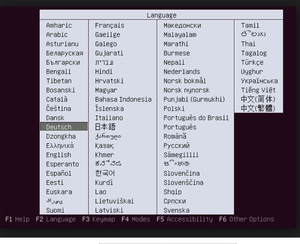
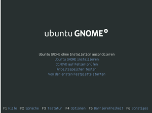
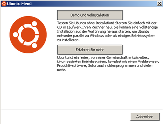
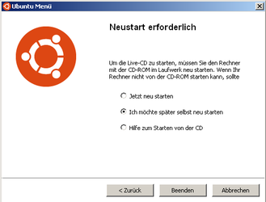

Desktop-CD
Ausbaufähige Anleitung
Dieser Anleitung fehlen noch einige Informationen. Wenn Du etwas verbessern kannst, dann editiere den Beitrag, um die Qualität des Wikis noch weiter zu verbessern.
Anmerkung: Es fehlen Hinweise, wie die CD oder der Stick über Einstellungen im Rechner-Setup oder übers System-Bootmenü zum Starten gebracht werden kann. Insbesondere fehlen Hinweise auf die Unterschiede zwischen herkömmlichem BIOS und (U)EFI bzw. auf die Vorgehensweise bei hybriden Systemen.
 Ubuntu kann man sehr leicht kennenlernen, indem man es einfach ausprobiert. Mit den Desktop-CDs/-DVDs (auch Live-CD/-DVD genannt) kann man dies bedenkenlos tun, da dabei die Daten auf den im System verbauten Festplatten nicht verändert werden. Dazu wird Ubuntu von CD oder DVD gebootet, so wie man es von z.B. Knoppix
Ubuntu kann man sehr leicht kennenlernen, indem man es einfach ausprobiert. Mit den Desktop-CDs/-DVDs (auch Live-CD/-DVD genannt) kann man dies bedenkenlos tun, da dabei die Daten auf den im System verbauten Festplatten nicht verändert werden. Dazu wird Ubuntu von CD oder DVD gebootet, so wie man es von z.B. Knoppix  her kennt.
her kennt.
Alternativ kann man auch einen USB-Stick verwenden, der aber zuerst vorbereitet werden muss: Live-USB
Vorbereitung¶
Wer die Ubuntu Desktop-CD aus dem Internet laden möchte, findet das passende ISO-Abbild im Abschnitt Downloads. Beim Brennen dieses Abbilds (Image) muss man darauf achten, es nicht einfach als Datei zu brennen, sondern eine Funktion wie "ISO-Image brennen" zu verwenden, um eine startbare (bootfähige) CD zu erhalten.
Die CD ist auch Teil des Ubuntu-CD-Sets, welches man sich früher kostenlos über ShipIt  zuschicken lassen konnte. Inzwischen gibt es diese Möglichkeit nur noch für die sog. LoCoTeams .
zuschicken lassen konnte. Inzwischen gibt es diese Möglichkeit nur noch für die sog. LoCoTeams .
CD-Start¶
Ab Ubuntu 10.04 LTS¶
Nach dem Einlegen der Live-CD bzw. des USB-Sticks mit dem entsprechenden ISO-Abbild und dem Einschalten des Rechners wird als erstes die Auswahl der Sprache angeboten. Hat man eine Sprache ausgewählt, etwa "Deutsch", wählt man den ersten Menüpunkt, bei dem die Desktop-CD gestartet wird. Allerdings kann es vorkommen, dass die Desktop-CD nicht vollständig laden möchte. Dies kann verschiedene Gründe haben. Damit man eine Desktop-CD nutzen kann, benötigt der Rechner mindestens 384 MB RAM-Speicher. Sollte es zu Problemen mit der Desktop-CD kommen, so empfiehlt sich eine Installation über die "Alternate-CD". Hier läuft die Installation im Textmodus ab. Am Ende ist es jedoch egal, welchen Weg man zur Installation gewählt hat, man erhält die gleiche Installation wie bei der Desktop-CD. Mehr dazu hier.
Es besteht die Möglichkeit, den Standard-Bootvorgang des Menüpunkts "Ubuntu starten oder installieren" durch Drücken von
F6 anzupassen. Im erscheinenden Menü können mehrere Punkte mittels
markiert werden. Mit
Esc kann das Menü verlassen werden. Nun kann mittels
← ,
→ die Zeile "Startoptionen" weiter angepasst werden. Zusätzlich zu den unter Booten beschriebenen Kernel-Parametern existieren bei einem Live-System weitere Parameter (z.B. "text", weitere siehe hier ).
Ab Ubuntu 10.04.1¶
 Mit der ersten Überarbeitung dieser Version stellt sich der Startvorgang wie folgt dar:
Nach dem Einlegen der Live-CD bzw. Einstecken des USB-Sticks mit dem entsprechenden ISO und dem Einschalten des Rechners erscheint unten auf dem Monitor ein Piktogramm, das auf die Eingabemöglichkeit durch die Tastatur hinweist. Nutzt man diese Option durch Drücken einer Taste, so erfolgt der nachfolgende Ablauf.
Ohne Eingriff durch den Bediener läuft das Live-System bis zu einem graphischen Desktop, auf dem das nebenstehende Sprach- Auswahl-Menü erscheint und in einem weiteren Menü kann die Auswahl entweder für
eine Live-Session,
eine Installation
oder eine Fehlerüberprüfung des Live-CD bzw. Live- USB-Sticks ...
erfolgen. 
Live-System¶
Das System, das von der Live-CD startet, entspricht nicht ganz genau dem später installierten System. Insbesondere ist die Sprache mancher Programme noch Englisch. Alle von Ubuntu unterstützten Sprachen hätten bei weitem keinen Platz auf der CD gefunden. Ein paar Dinge könnten darüber hinaus nicht funktionieren, die sich später einfach nachinstallieren lassen: 3D-Grafik, bestimmte Modems, WLAN- oder ISDN-Karten (sehr kompliziert). Wenn man nicht sicher ist, ob ein bestimmtes Gerät später funktionieren wird, kann man das meistens durch Suchen im Forum und Wiki herausfinden. Finden sich keine brauchbaren Informationen, kann man sich natürlich auch im Forum erkundigen. Möglichst genaue Angaben zu dem fraglichen Gerät sind dabei sehr von Vorteil. Viele Informationen über die verbaute Hardware kann man über den Gerätemanager herausfinden.
Problembehebung¶
Es kann bei einigen Hardwarekombinationen vorkommen, dass die Live-CD sich aufhängt. In dem Wiki Artikel Ubuntu-CD Problembehebung findet man einige Tipps und Hinweise, wie man doch die Ubuntu Live-CD booten kann, selbst wenn anfängliche Versuche scheitern sollten.
Unter Microsoft Windows (bis Ubuntu 14.04)¶
Die Desktop-CD kann man auch unter Microsoft Windows nutzen. Wenn man sie einlegt (und der CD-Autostart aktiviert ist), erhält man für Ubuntu 12.04 folgende Übersichtsfenster:
|  |
| Demo und Installation |
|  |
| Neustart |
Ist der Autostart deaktiviert, so kann man die Live-CD auch durch Aufruf des Programms wubi.exe starten. Nun hat man die Möglichkeit, den Computer mit Ubuntu als Live-CD neu zu starten oder direkt Ubuntu mittels des sogenannten "Wubi Installers" in Windows zu installieren. Mehr Informationen hierzu findet man im Artikel Wubi.
Installation?¶
Wem Ubuntu auf Anhieb gut gefällt, kann Ubuntu über ein entsprechendes Symbol auf dem Desktop auch gleich auf die Festplatte installieren. Trotzdem wird empfohlen, sich die Übersichtsseite Installation anzuschauen, denn je nach Vorkenntnissen, Wünschen und vorhandener Hardware sind verschiedene Varianten möglich bzw. erforderlich.
- Erstellt mit Inyoka
-
 2004 – 2017 ubuntuusers.de • Einige Rechte vorbehalten
2004 – 2017 ubuntuusers.de • Einige Rechte vorbehalten
Lizenz • Kontakt • Datenschutz • Impressum • Serverstatus -
Serverhousing gespendet von